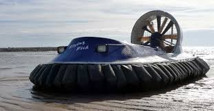
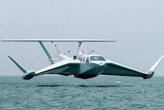
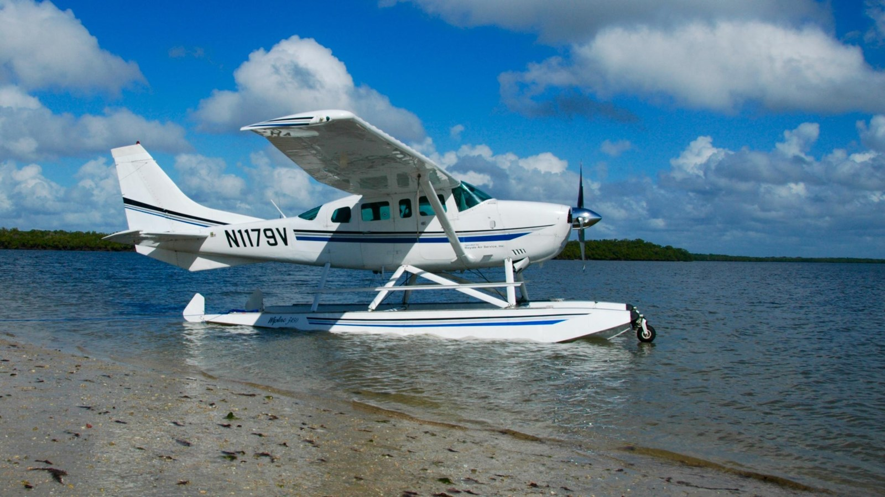
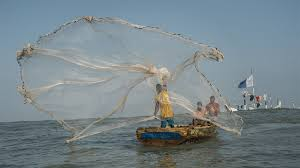
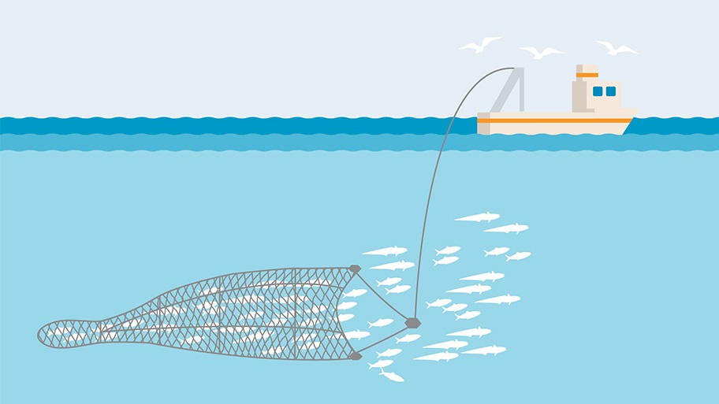
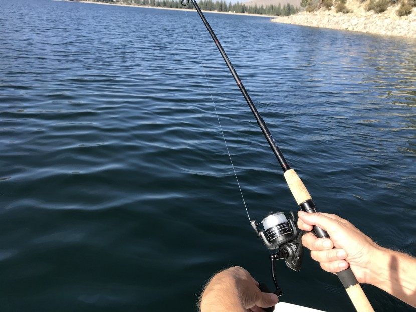
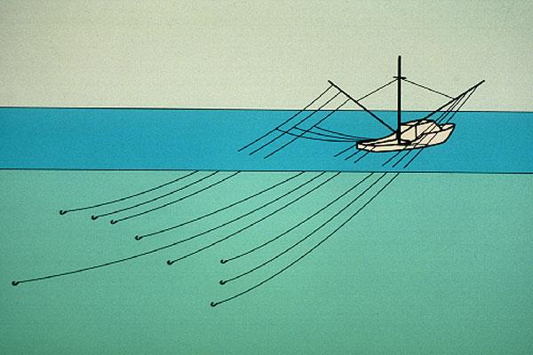

Introduction to the International Regulations for Preventing Collisions at Sea (COLREGs)
The International Regulations for Preventing Collisions at Sea (COLREGs) are the globally recognized rules governing maritime navigation to ensure safety and prevent collisions between vessels. Established by the International Maritime Organization (IMO) and first adopted in 1972, these regulations provide standardized procedures for:
Steering and Sailing Rules (Right-of-way, overtaking, crossing, and head-on situations)
Lights and Shapes (Visual signals for day and night)
Sound and Light Signals (Fog signals, maneuvering warnings)
Responsibilities of Vessels (Based on type, size, and operational status)
Why Are COLREGs Important?
Universal Standardization – Ensures all mariners follow the same rules, reducing confusion.
Collision Prevention – Clear guidelines for navigation in all conditions (good visibility, restricted visibility, and emergencies).
Legal Framework – Used in accident investigations to determine fault and liability.
The COLREGs include 41 rules divided into six sections:
Part A - General (Rules 1-3)
Part B - Steering and sailing (Rules 4-19)
Part C - Lights and shapes (Rules 20-31)
Part D - Sound and light signals (Rules 32-37)
Part E - Exemptions
Part F - Verification of compliance with the provisions of the Convention (Rules 39-41)
The COLREGs include four annexes:
Annex I - Positioning and technical details of lights and shapes
Annex II - Additional signals for fishing vessels fishing in close proximity
Annex III - Technical details of sounds signal appliances
Annex IV - Distress signals, which lists the signals indicating distress and need of assistance.
Application
Rule 1 - states that the rules apply to all vessels upon the high seas and all waters connected to the high seas and navigable by seagoing vessels.
(a) These Rules shall apply to all vessels upon the high seas and in all waters connected therewith navigable by seagoing vessels.
(b) Nothing in these Rules shall interfere with the operation of special rules made by an appropriate authority for roadsteads, harbours, rivers, lakes or inland waterways connected with the high seas and navigable by seagoing vessels. Such special rules shall conform as closely as possible to these Rules.
(c) Nothing in these Rules shall interfere with the operation of any special rules made by the Government of any State with respect to additional station or signal lights, shapes or whistle signals for ships of war and vessels proceeding under convoy, or with respect to additional station or signal lights or shapes for fishing vessels engaged in fishing as a fleet. These additional station or signal lights, shapes or whistle signals shall, so far as possible, be such that they cannot be mistaken for any light, shapes or signal authorized elsewhere under these Rules.
(d) Traffic separation schemes may be adopted by the Organization for the purpose of these Rules.
(e) Whenever the Government concerned shall have determined that a vessel of special construction or purpose cannot comply fully with the provisions of any of these Rules with respect to the number, position, range or arc of visibility of lights or shapes, as well as to the disposition and characteristics of sound-signalling appliances, such vessel shall comply with such other provisions in regard to the number, position, range or arc of visibility of lights or shapes, as well as to the disposition and characteristics of sound-signalling appliances, as her Government shall have determined to be the closest possible compliance with these Rules in respect to that vessel.
Responsability
Rule 2 - covers the responsibility of the master, owner and crew to comply with the rules.
(a) Nothing in these Rules shall exonerate any vessel, or the owner, master or crew thereof, from the consequences of any neglect to comply with these Rules or of the neglect of any precaution which may be required by the ordinary practice of seamen, or by the special circumstances of the case.
(b) In construing and complying with these Rules due regard shall be had to all dangers of navigation and collision and to any special circumstances, including the limitations of the vessels involved, which may make a departure from these Rules necessary to avoid immediate danger.
Definitions
Rules 3 - includes definitions.
For the purpose of these Rules, except where the context otherwise requires:
(a) The word 'vessel' includes every description of water craft, including ,
and , used or capable of being used as a means of transportation on water.
(b) The term 'power-driven vessel' means any vessel propelled by machinery.
(c) The term 'sailing vessel' means any vessel provided that propelling machinery, if fitted, is not being used.
(d) The term 'vessel engaged in fishing' means any vessel fishing with
, , or other fishing apparatus which restrict manoeuvrability, but does not include a vessel fishing with or other fishing apparatus which do not restrict manoeuvrability.
(e) The word 'seaplane' includes any aircraft designed to manoeuvre on the water.
(f) The term 'vessel not under command' means a vessel which through some exceptional circumstance is unable to manoeuvre as required by these Rules and is therefore unable to keep out of the way of another vessel.
(g) The term 'vessel restricted in her ability to manoeuvre' means a vessel which from the nature of her work is restricted in her ability to manoeuvre as required by these Rules and therefore is unable to of another vessel. The term 'vessels restricted in their ability to manoeuvre' shall include but not be limited to:
(i) a vessel engaged in laying, servicing or picking up a navigation mark, submarine cable or pipeline;
(ii) a vessel engaged in dredging, surveying or underwater operations;
(iii) a vessel engaged in replenishment or transferring persons, provisions or cargo while underway;
(iv) a vessel engaged in the launching or recovery of aircraft;
(v) a vessel engaged in mineclearance operations;
(vi) a vessel engaged in a towing operation such as severely restricts the towing vessel and her tow in their ability to deviate from their course.
(h) The term 'vessel constrained by her draught' means a power-driven vessel which because of her draught in relation to the available depth and width of navigable water, is severely restricted in her ability to deviate from the course she is following.
(i) The word 'underway' means that a vessel is not at anchor, or to the shore, or aground.
(j) The words 'length' and 'breadth' of a vessel mean her length overall and greatest breadth.
(k) Vessels shall be deemed to be in sight of one another only when one can be observed visually from the other.
(l) The term 'restricted visibility' means any condition in which visibility is restricted by fog, mist, falling snow, heavy rainstorms, sandstorms or any other similar causes.
(m) The term 'Wing-In-Ground (WIG) craft' means a multimodal craft which, in its main operational mode, flies in close proximity to the surface by utilizing surface-effect action.
Basic Lights Configurations
Rule 1 - states that the rules apply to all vessels upon the high seas and all waters connected to the high seas and navigable by seagoing vessels.
N.B
Sidebar Content:
Click the 'Content' button in the navigation bar to open the sidebar (which lists all available content)
Word Clarifications:
Click any bold word (marked with the ) to view its definition or additional notes.
Non-displacement craft

A non-displacement craft is a type of boat or ship that does not push water aside (displace it) as it moves. Instead, it rides on top of the water at high speeds, often supported by lift (like hydrofoils, hovercraft, or planing hulls).
WIG craft

A WIG craft (Wing-in-Ground-effect craft) is a high-speed vehicle that flies just above water or flat land using ground effect (the aerodynamic lift created by air trapped between its wings and the surface).
Seaplane

A seaplane is an aircraft designed to take off from and land on water, using floats or a boat-like hull instead of wheels.
Vessel under sail
A vessel under sail is any boat or ship that is propelled primarily by wind using sails, rather than by engines or oars.
Fishing with Nets

Using mesh nets to trap fish.
Trawls (Trawl Fishing)

Dragging a large net (trawl net) along the seafloor/midwater.
Fishing with Lines

Using hooks on lines (handheld or mechanized).
Trolling lines

Dragging baited lines behind a moving boat.
Keep out the way
A vessel required to take early, clear action to avoid collision with another vessel (under COLREGs/International Regulations for Preventing Collisions at Sea).
Made fast
Securing a line (rope), anchor, or cargo so it cannot move.